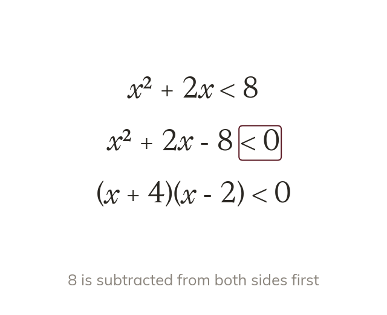
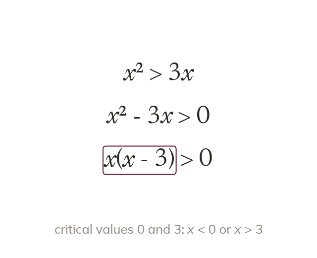
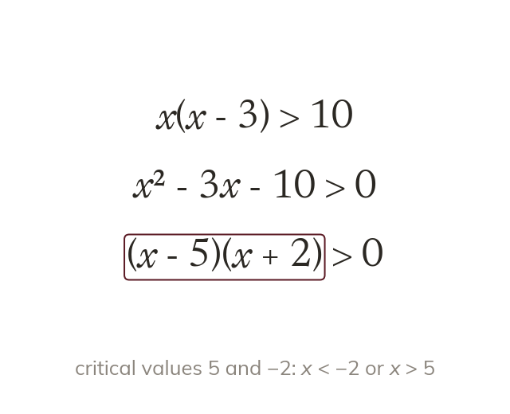
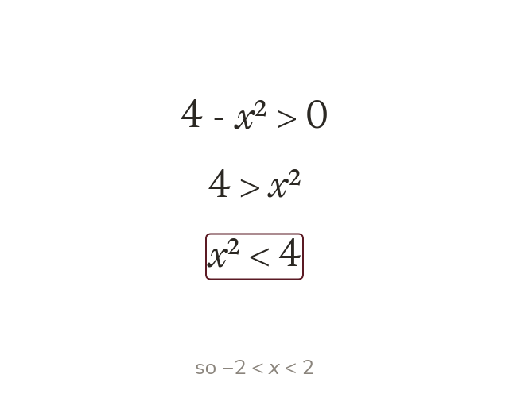
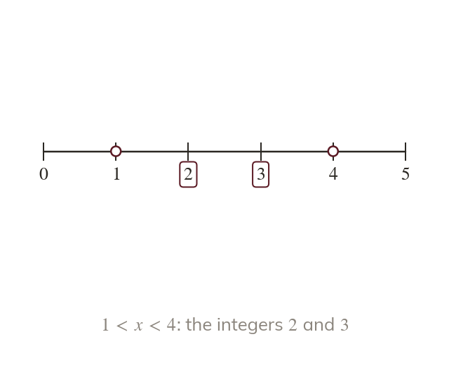

One side must be zero
A quadratic inequality is solved with one side equal to
The critical values then come from the factors.
Real conditions rarely arrive tidy, such as or
Gathering everything on one side turns each into an inequality we already know how to solve.
Work down the page at your own pace. Write every answer in your book first, then click to check it.
Read each card, then follow the worked examples one step at a time.

A quadratic inequality is solved with one side equal to
The critical values then come from the factors.

Dividing both sides by x throws away answers. Gathering terms and factorising keeps them all.
Pick an answer. If it's wrong, the feedback tells you which mistake it was.
Read each card, then follow the worked examples one step at a time.

Brackets are expanded before the terms are gathered. So becomes

A negative term makes the sketch a hill. Moving that term across keeps positive instead.

For < or >, the critical values are not solutions. So holds only the integers and
Pick an answer. If it's wrong, the feedback tells you which mistake it was.
Finished? Next lesson: 10H.15.7 Plotting and Recognising Non-Linear Graphs.
Log in, then search for a code to practise that skill.
Videos, worksheets and more on each part of this lesson.